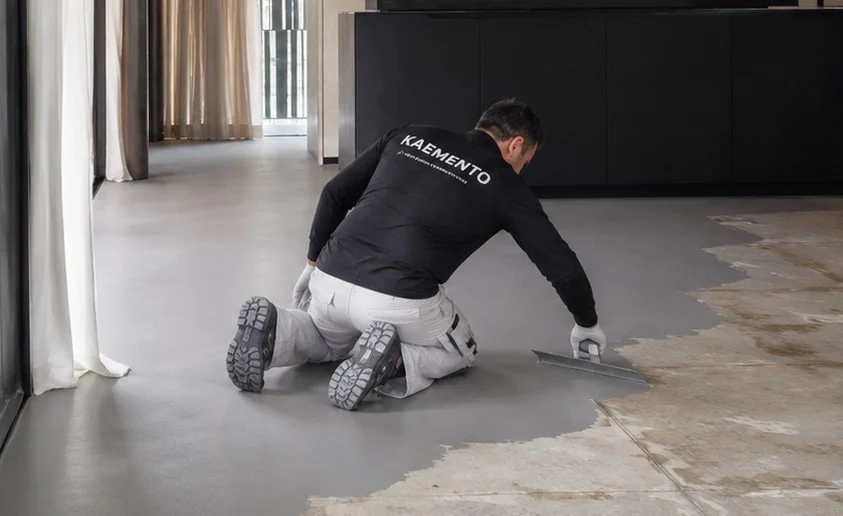

Preparación
Evaluamos y estabilizamos el soporte.
ACABADO CONTINUO
Pisos, muros, baños, escaleras y mobiliario resueltos como un sistema visual continuo.

SOLUCIÓN KAEMENTO
Aplicamos Microcemento KAEMENTO sobre soportes correctamente preparados para obtener superficies minerales, continuas y contemporáneas con acompañamiento técnico.
Evaluamos y estabilizamos el soporte.
Aplicamos base y arena de cuarzo.
Construimos capas de color y textura.
Protegemos según el uso final.
SUPERFICIES CONTINUAS


MICROCEMENTO EN LOS ESPACIOS
Pisos, muros, baños y terrazas: una selección de ambientes y aplicación de nuestro catálogo de Microcemento KAEMENTO.

Sala en tono Arena, con superficies continuas y luz natural.

Baño en Extra Blanco, con continuidad entre piso y muros.

Sala en Negro Profundo, con chimenea y acabados de alto contraste.

Terraza en Terracota, con superficies de expresión mineral.

Interior en Gris Cemento, con piso continuo de tono neutro.

Aplicación con llana sobre una superficie preparada.
COLORES Y ACABADOS
La paleta de Microcemento KAEMENTO, con acabado final mate o brillante.

Los tonos pueden variar según la luz, la textura, el sellador y las condiciones de aplicación.
Consultar colores en el catálogo ↗INFORMACIÓN CLAVE
Antes de intervenir, identificamos condiciones, causas y restricciones.
Organizamos frentes de trabajo, controles y entregables.
Atendemos proyectos desde Bogotá en diferentes regiones del país.
La solución final se especifica después de revisar las condiciones reales del proyecto. Los tiempos, materiales y frentes de trabajo se coordinan para proteger la calidad y la operación del espacio.
PREGUNTAS FRECUENTES
Con una revisión de la necesidad, el soporte, el uso del espacio y las restricciones operativas. A partir de allí se define alcance, sistema y programación.
Sí. Según el proyecto podemos integrar diagnóstico, productos, mano de obra, supervisión y entrega técnica.
Sí. KAEMENTO tiene cobertura a nivel nacional y evalúa cada proyecto según ubicación, alcance y condiciones de ejecución.
ASESORÍA KAEMENTO